عن كاجي الأنمي🌀
👋 أهلاً بيك في كاجي أنمي، المكان اللي هتلاقي فيه ملخصات أنمي سريعة،
بدون حرق، وبأسلوب سهل يوصل لك القصة في دقائق!
بنقدملك ملخصات لأشهر الأنميات زي ناروتو، هجوم العمالقة، ون بيس، ديث نوت
وغيرهم كتير، علشان تفهم القصة بسرعة قبل ما تبدأ المشاهدة أو لو حابب تراجع الأحداث.
هدفنا إنك تفهم،
تستمتع، وتوفّر وقتك… لأن الأوتاكو الحقيقي يستاهل كل حاجة جاهزة في مكان واحد! 🎯
🌀 إحنا مش موقع أنمي عادي… إحنا كاجي الأنمي!
في موقعنا بنقدم ملخصات وتحليلات لقناة "بتاع أنمي"، واحدة من القنوات ال لي قدرت تسيب بصمة قوية في عالم الأنمي العربي 🎬✨ ال قناة كانت بتتميز بأسلوب بسيط، رايق، ومليان حماس يخليك تحس إنك عايش جوّه الأحداث بنفسك. من أول الفي ديوهات التحليلية لحد المقارنات بين الشخصيات، "بتاع أنمي" كانت دايمًا بتقدم محتوى بيخليك تفهم الأنمي مش بس تتفرج عليه.
جميع الحقوق محفوظه لقناه بتاع انمي
إحنا هنا بنجمع أفضل لحظاتها، بنكتب عنها، ونحللها بشكل منظّم وسهل، عشان تقدر توصل لملخص كل فيديو أو فكرة من غير ما تضيع وقتك. هدفنا إن الموقع يكون زي أرشيف ذهبي لكل محتوى القناة — مكان واحد يجمع الحماس، التحليل، والذكريات الجميلة 💫
إذا كنت تريد اي ملخصات اخري يرجي تواصل معانا علي قناه اليوتويوب للوصول أضغط هنا

أختر الأنمي
- جوجوتسو كايسن
- ناروتو
- فينلاند ساغا
- بلاك كلوفر
- هجوم العمالقه
- شارلوت (حكايه يو)
- طوكيو غول
- التجويه معك(حكايه هينا فتاه الشروق)
- صائدي الشياطين(حكايه داندي)
- عداء و حافه السايبربانك (حكايه ديفيد)
- طريق الأكودام
- فصل الأغتيال (حكايه كورو سينسي)
- اكادميه بطلي (حكايه ميدوريا)
- هايكيو (حكايه هيناتا)
- كايجو رقم 8 (حكايه كافكا)
- هنتر اكس هنتر (حكايه غون)
- دكتور استون (حكايه سينكو)
- مونستير(حكايه تينما)
- اكامي تقتل (حكايه تاتسومي)
- مذكرة الموت
ملخص انمي جوجوتسو كايسن
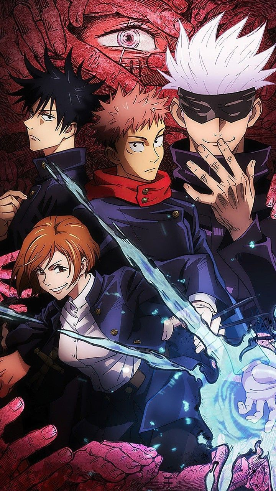أنمي Jujutsu Kaisen يعتبر واحد من أقوى وأشهر الأنميات الحديثة اللي خدت مكانة كبيرة في قلوب عشاق الأنمي حول العالم ⚔️🔥 القصة بتدور حوالين يوجي إيتادوري، طالب ثانوي عنده طاقة غير عادية، بيتورط في عالم من اللعنات والأرواح الشريرة بعد ما يبتلع إصبع "سوكونا" — أقوى لعنة في التاريخ.
الأنمي بيمزج بين الأكشن، الرعب النفسي، والكوميديا السوداء بطريقة متوازنة جدًا، ومع كل حلقة بتحس إن الأحداث بتتصاعد أكتر وأن الشخصيات بتتطور بعمق حقيقي. غير كده، التحريك والقتالات في Jujutsu Kaisen من الأفضل في عالم الأنمي، وده بفضل ستوديو MAPPA اللي قدم شغل بصري خرافي.
ولو أنت من الناس اللي بتحب القصص المظلمة، الغموض، والقوة الخارقة، فـ Jujutsu Kaisen هو التجربة اللي مش هتقدر تنساها 👹✨ تابع معانا هنا في الموقع ملخصات وتحليلات لأحداث ا لأنمي بكل تفاصيلها، وكل حلقة بنشرحها بشكل سهل وسلس يخليك تعيش جوّه العالم ده. أضغط هنا للمشاهده
ملخص أنمي ناروتو

في عالم مليان بالشينوبي، وقرى خفية، وأسرار لا تنتهي… بنعيش رحلة الفتى ناروتو أوزوماكي، الطفل اللي اتولد وهو جواه وحش الكيوبي، واللي رغم كره الناس ليه، كان عنده حلم واحد: يبقى الهوكاجي، أقوى نينجا في قرية الورق.
من طفولته الصعبة لحد معاركه ضد أقوى الأعداء زي باين، أوتشيها مادارا، وكاجويا، ناروتو علمنا يعني إيه الصبر، الصداقة، والإصرار على الحلم مهما كانت الظروف.
الملخص ده بياخدك في رحلة سريعة ومكثفة عبر كل الأحداث اللي صنعت أسطورة ناروتو — من بدايته لحد النهاية، بلحظات الفخر، الألم، والبطولة اللي خلت الأنمي ده من أعظم ما اتعمل في التاريخ.
اضغط هنا للمشاهدهملخص أنمي Vinland Saga
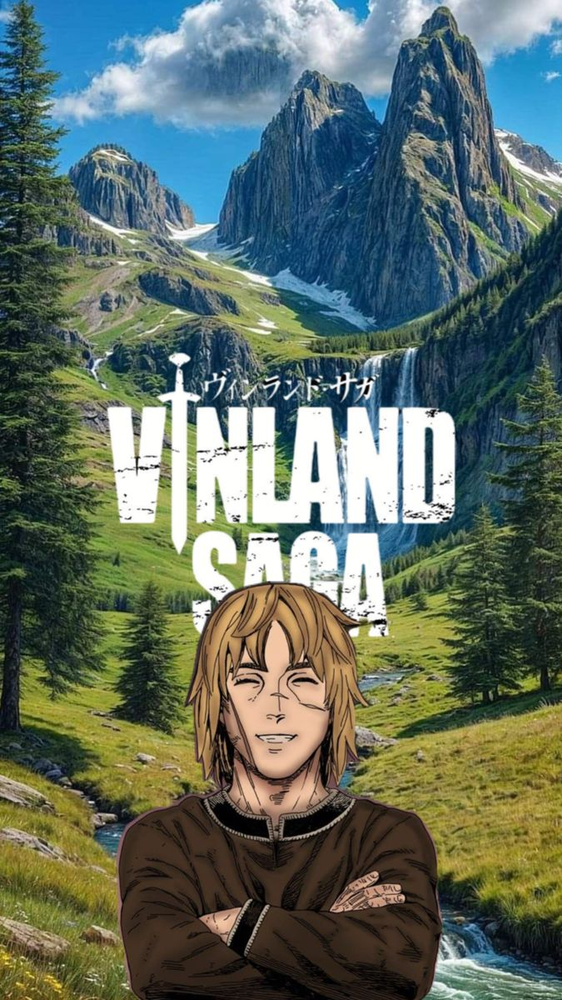في زمنٍ يسيطر عليه السيف والدم، حيث لا يعيش سوى الأقوياء، تنطلق حكاية ثورفين — الفتى الذي فقد والده المحارب العظيم، وكرّس حياته للانتقام من قاتله. أنمي Vinland Saga بيقدّم مزيج نادر بين الدراما الإنسانية العميقة والواقعية التاريخية لعصر الفايكنج، في رحلة بتكشف معنى الحرب، الكراهية، والحرية.
من شواطئ آيسلندا الباردة إلى ميادين المعارك في إنجلترا، بين صراخ الحديد ورائحة البحر، بيعيش المشاهد تجربة ملحمية تخلّد فكرة إن أقسى الرحلات مش دايمًا للانتقام… أحيانًا بتكون للبحث عن معنى الحياة نفسها.
Vinland Saga مش مجرد قصة عن قتال، لكنه ملحمة عن الإنسان — عن القوة الحقيقية اللي بتتولد لما القلب يختار السلام بدل السيف، وعن التغيير اللي ممكن يحصل حتى لأقسى النفوس.
اضغط هنا للمشاهدهملخص أنمي Black Clover

في عالمٍ بيُقاس فيه مصيرك بمدى قوتك السحرية، وُلد فتى لا يملك أي سحر… آستا، الطفل اللي قرر يكسر كل القواعد ويثبت إن الإرادة ممكن تتغلب على القدر. بجانب صديقه ومنافسه يونو، بيبدأ حلمهم الكبير: إنهم يبقوا ملك السحر.
أنمي Black Clover بيجمع بين المغامرة، الكوميديا، والمعارك الملحمية اللي بتولّع الحماس في كل حلقة، وبيورينا معنى الصداقة الحقيقية، والطموح اللي ما يعرفش حدود.
وسط مواجهات نارية ضد فرسان السحر، الشياطين، والمنظمات الغامضة، بيعيش آستا رحلة صعود من الصفر لقمة العالم، بدافع واحد بس: مافيش مستحيل طول ما عندك عزيمة لا تنكسر.
اضغط هنا للمشاهدهملخص أنمي Attack on Titan

في عالم محاصر بجدران ضخمة، والإنسانية على حافة الانقراض، بتبدأ حكاية الفتى إرين ييغر اللي شاف بعينه اليوم اللي اتدمرت فيه حريته. بعد ما شاف والدته بتموت على يد العمالقة، قرر يعيش لهدف واحد: يبيد كل العمالقة مهما كان الثمن.
أنمي هجوم العمالقة بيقدّم قصة مليانة غموض، دم، وخيانة، في عالم ما تعرفش فيه مين العدو الحقيقي — العملاق اللي قدامك، ولا الإنسان اللي جنبك.
من صرخات الحرب إلى أسرار الجدران، ومن الكراهية إلى الحرية، بيخوض إرين ورفاقه رحلة قاسية بتكشف الوجه الحقيقي للعالم... رحلة بتسأل: هل الحرية تستحق كل هذا الألم؟
Attack on Titan مش مجرد أنمي أكشن، لكنه تحفة فكرية وإنسانية بتفجّر فيك أسئلة عن العدالة، الانتقام، والمصير.
اضغط هنا للمشاهدهملخص أنمي Charlotte
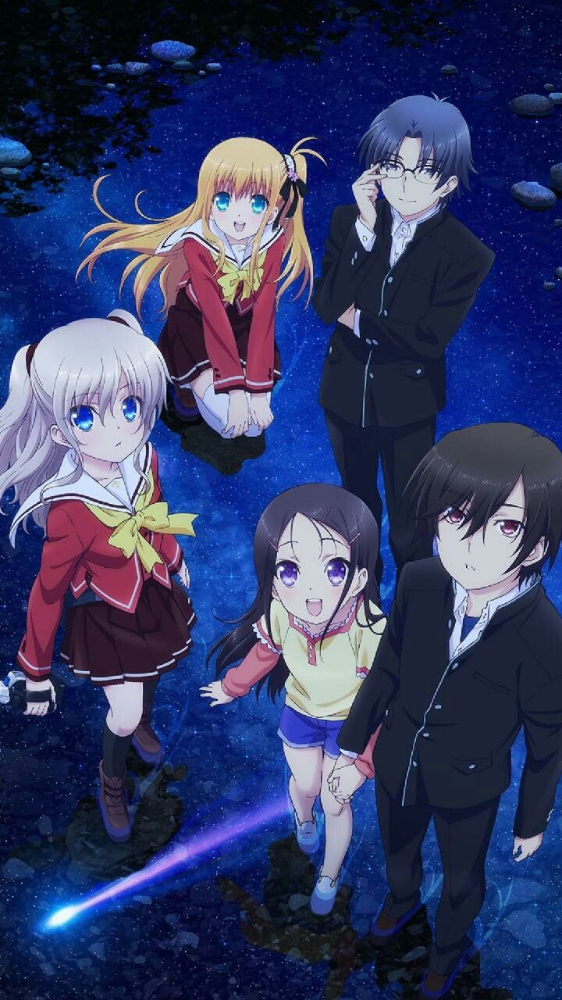في عالم بيعيش فيه بعض المراهقين بقوى خارقة مؤقتة، بيظهر فتى اسمه يو أوتوساكا، قدرته الغريبة بتخليه يسيطر على أي شخص لثوانٍ معدودة — قوة استخدمها في الغش والطريق السهل نحو الشهرة.
لكن حياته بتتغير تمامًا لما يقابل ناو توموري، قائدة مجموعة هدفها حماية المراهقين ذوي القدرات من استغلال الحكومات والمنظمات السرية. ومن هنا تبدأ رحلة مليانة دراما، تضحيات، ومواقف بتكسر القلب.
أنمي Charlotte بيقدّم تجربة فريدة عن معنى القوة والمسؤولية، وبيسألنا سؤال صعب: لو كان عندك قدرة خارقة… هتستخدمها علشان نفسك؟ ولا علشان غيرك؟
عمل إنساني راقي، بموسيقى مؤثرة وقصة بتفضل محفورة في الذاكرة، بيثبت إن المشاعر هي أقوى قدرة يمتلكها الإنسان.
اضغط هنا للمشاهدهملخص أنمي Tokyo Ghoul
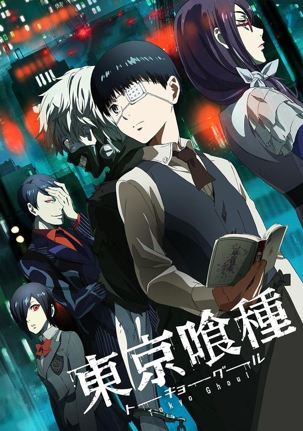في مدينة طوكيو المليانة بالغموض والخطر، بيعيش البشر جنبًا إلى جنب مع مخلوقات بتتغذى على اللحم البشري تُعرف باسم الغول (Ghouls). من بعيد، شكلهم زي البشر تمامًا، لكن جواهم وحش لا يرحم.
القصة بتبدأ مع كانكي كن، طالب جامعي هادي ومحب للقراءة، حياته بتتقلب تمامًا لما يتعرض لهجوم من غول، وينتهي بيه الحال بنصف إنسان ونصف غول بعد عملية زراعة أعضاء. من اللحظة دي، بيبدأ صراعه بين الجانبين — هل هو إنسان ولا غول؟
Tokyo Ghoul بيغوص في النفس البشرية، وبيطرح سؤال صعب: "مين الوحش الحقيقي؟" الغيلان اللي بيقاتلوا علشان يعيشوا، ولا البشر اللي بيقتلوهم بدون رحمة؟
الأنمي مزيج بين الرعب، الدراما، والفلسفة، ومع موسيقى مؤثرة زي Unravel الأسطورية، بتعيش تجربة مظلمة ومليانة مشاعر متناقضة. العمل ده بيخليك تشوف العالم من زاويتين في وقت واحد — زاوية الضحية والوحش.
اضغط هنا للمشاهدهملخص أنمي Weathering With You
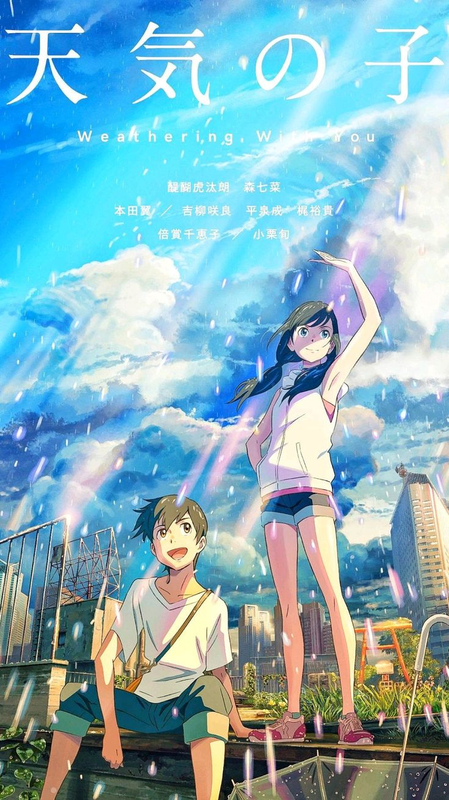في طوكيو الممطرة باستمرار، بيوصل الفتى هوداكا موروشيما للهروب من قريته الصغيرة أملاً في حياة جديدة، لكنه بيكتشف إن المدينة الكبيرة مش دايمًا مليانة نور زي ما تخيل.
وسط الزحمة واليأس، بيتعرف على فتاة غامضة اسمها هينا أمانو، عندها قدرة عجيبة إنها توقف المطر وتجعل الشمس تطلع بدعائها. من هنا بتبدأ قصة حب وسحر بتجمع بين الاتنين، لكن القوة دي ليها تمن غالي.
الأنمي بيعرض صراع جميل بين الاختيار والتضحية، وبين رغبة الإنسان في إنقاذ من يحب حتى لو العالم كله ضده. وبيقدم رسالة عميقة عن المناخ، الإرادة، والحرية في اتخاذ القرار مهما كانت العواقب.
بصريًا، Weathering With You تحفة فنية؛ كل لقطة مليانة تفاصيل وألوان تخليك تحس إن المطر نفسه ليه مشاعر. والموسيقى من فرقة RADWIMPS بتضيف بعد عاطفي يخليك تعيش كل لحظة بكل إحساسها.
اضغط هنا للمشاهدهملخص أنمي Devil May Cry
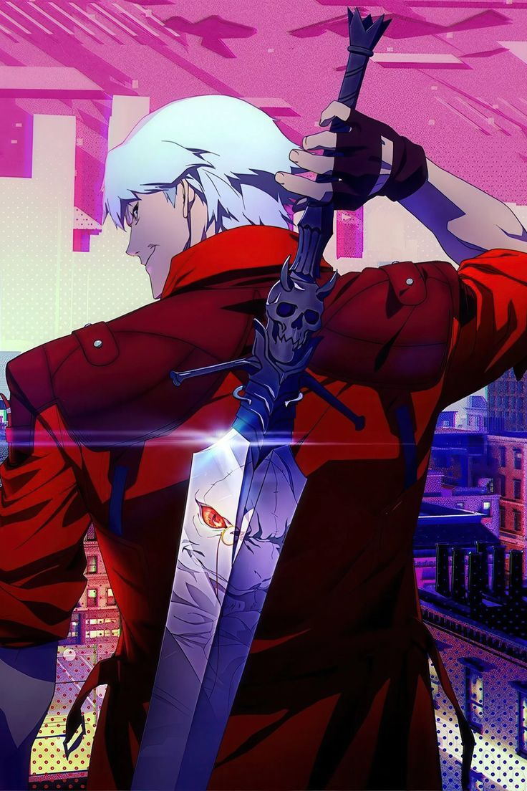Devil May Cry أنمي مستوحى من سلسلة الألعاب الشهيرة من شركة Capcom وبيحكي عن مغامرات دانتي، صائد الشياطين نصف إنسان ونصف شيطان، اللي بيعيش بين عالمين — بيقاتل الشياطين، لكنه في نفس الوقت مش قادر يهرب من دمهم اللي بيجري في عروقه.
دانتي بيملك مكتب اسمه "Devil May Cry"، وبيشتغل فيه كصائد شياطين مأجور بياخد مهام غريبة من عملاء بيواجهوا قوى خارقة. رغم شخصيته الهادية واللامبالية، إلا إنه بيحمل ماضي مؤلم بيغذي غضبه وحزنه، وبيخليه دايمًا على الحافة بين الإنسانية والوحش اللي جواه.
الأنمي بيمتزج فيه الأكشن السريع، الموسيقى الصاخبة، والمشاهد القتالية اللي كلها ستايل وشخصية. دانتي مش مجرد بطل، هو أسطورة تمشي على الأرض — بيواجه الجحيم بابتسامة وبسيفه الشهير Rebel lion
Devil May Cry بيقدم تجربة مظلمة، راقية، ومليانة غموض، وبيحافظ ع لى روح اللعبة الأصلية مع لمسة درامية بتكشف عن عمق شخصية دانتي وعلاقته بالعالم اللي بيحاول يدمره.
اضغط هنا للمشاهدهملخص أنمي Cyberpunk: Edgerunners
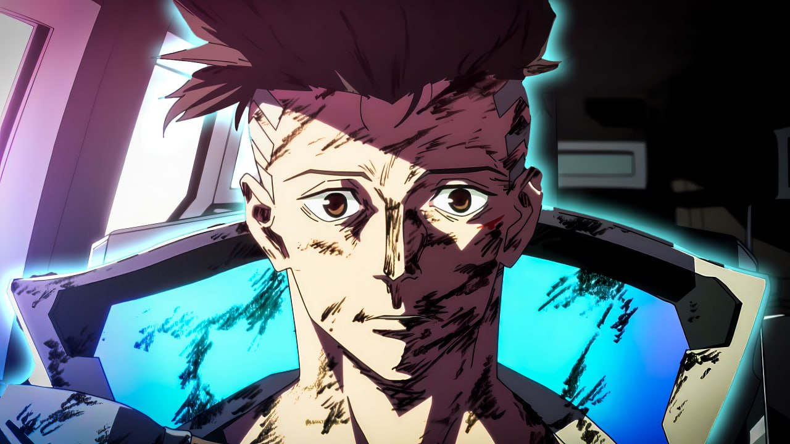في عالم مستقبلي غارق في الفساد والتكنولوجيا، يعيش ديفيد مارتينيز ياة مليئة وال خطر في مد ينة "نايت سيتي". ب عد موت وا لدته أمام عينيه في حادث مأس اوي، يقرر ديفيد زرع جهاز إلك تروني قوي داخل جسده يمنحه قدرات خارقة، لكنه يفتحله أبواب الجحيم في عالم لا يرحم.
يواجه ديفيد حياة "الـEdgerunners" — مرتزقة يسعون للبقاء وسط صراعات العصابات، الشرك ات الضخمة، والمجرمين السيبرانيين. ومع مرور الوقت، يبدأ في فقدان إنسانيته شيئًا فشيئًا بين ضجيج الرصاص والنيون.
أنمي Cyberpunk: Edgerunners تحفة بصرية من أستوديو Trigger، يمزج بين الد راما، الأكشن، والتراجيديا الإنسا نية في عالم السايبربانك المظلم
اضغط هنا للمشاهدهملخص أنمي Akudama Drive

Akudama Drive أنمي بيدور في عالم مستقبلي مظلم مليان تكنولوجيا متطورة، لكن من غير عدالة حقيقية. بعد حرب ضخمة بين منطقتين — كانساي وكانتو — العالم اتقسم، وبدأ يظهر نوع جديد من المجرمين يُعرف باسم الأكوداما.
القصة بتبدأ لما فتاة عادية تتورط بالصدفة مع مجموعة من أخطر الأكوداما في مهمة مستحيلة، وبتتحول حياتها من الهدوء للفوضى الكاملة. ومع مرو ر الوقت، بتكتشف إن المفاهيم اللي اتربت عليها عن “الخير والشر” مش واضحة زي ما كانت فاكرة.
الأنمي بيتفوق في الإخراج البصري والسرعة المجنونة في الأحداث، كل مشهد مليان حركة، ألوان نيون، ومؤثرات تخليك تحس إنك جوّه لعبة أكشن مستقبلية. الشخصيات كلها فريدة ومجنونة، وكل واحد عنده دافع خاص بيخليه خطر حتى على زملائه.
Akudama Drive مش مجرد أكشن وانفجارات، لكنه كمان رسالة عن النظام، الحرية، والمجتمع اللي بيفضل يخفي الحقيقة ورا التكنولوجيا. النهاية بتسيب فيك أثر كبير، وبتخليك تفكر في معنى العدالة الحقيقي.
اضغط هنا للمشاهدهملخص أنمي Assassination Classroom

تخيّل إنك طالب في فصل عادي، لكن أستاذك هو مخلوق غريب فائق السرعة دمّر نصف القمر، وبيقولكم: "عندكم سنة واحدة تقتلوني فيها... وإلا هدمّر الأرض!"
هنا تبدأ القصة، فصل 3-E المعروف بـ "فصل الفاشلين"، بيتحوّل لمجموعة من القتلة الصغار تحت إشراف معلمهم الغريب كورو-سينسي، اللي رغم كل ده... بيعلّمهم دروس عن الحياة، الصداقة، والتطور الحقيقي.
Assassination Classroom مش مجرد أنمي عن القتل، لكنه رحلة عن تحقيق الذات، التغلب على الفشل، وإيجاد الهدف الحقيقي في الحياة.
أنمي بيخليك تضحك، تتأثر، وتفكر في معنى التعليم والإنسانية في وقت واحد... وده نادر جدًا.
اضغط هنا للمشاهدهملخص أنمي My Hero Academia
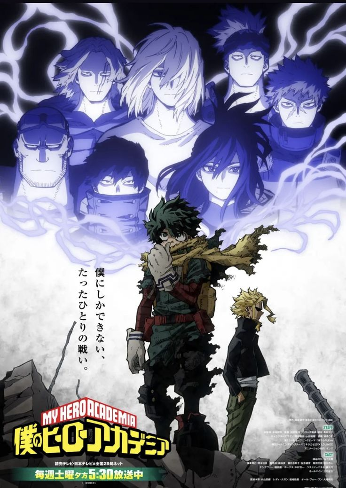في عالم أصبح فيه امتلاك القوى الخارقة – أو ما يُعرف باسم الكويركس (Quirks) – أمرًا طبيعيًا، وُلد البطل إيزوكو ميدوريا من غير أي قوة، لكنه كان دايمًا بيحلم إنه يكون بطل عظيم زي مثله الأعلى أول مايت.
رغم إن العالم كله شايف إن حلمه مستحيل، إلا إن القدر بيتدخل لما أول مايت يختار ميدوريا كوريث لقوته الأسطورية One For All. ومن هنا بتبدأ رحلته في أكاديمية الأبطال UA High علشان يثبت إن الش جاعة والإصرار أقوى من الموهبة.
الأنمي بيعرض صراع رهيب بين الخير والشر، وبين الأبطال الحقيقيين اللي بيقاتلوا علشان العدالة، واللي بيدّعوا البطولة علشان الشهرة والمصلحة. ومع كل موسم، الشخصيات بتتطور والقصة بتزداد عمق، خصوصًا لما ميدوريا يبدأ يكتشف أسرار قوته والماضي المظلم للعالم اللي حواليه.
My Hero Academia بيجمع بين الأكشن، الدراما، والمشاعر الإنسانية، وبيقدّم رسالة واضحة: "مش لازم تتولد قوي علشان تبقى بطل، لكن لازم تؤمن بنفسك وتكمل مهما حصل".
اضغط هنا للمشاهدهملخص أنمي Haikyuu!!
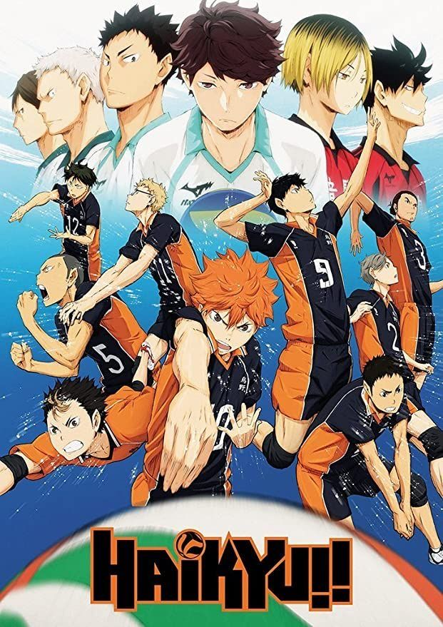Haikyuu!! هو أنمي رياضي بيركّز على لعبة الكرة الطائرة، لكنه أعمق بكتير من مجرد رياضة. القصة بتحكي عن شويو هيناتا، طالب قصير القامة بيقع في حب اللعبة بعد ما يشوف أداء لاعب معروف بلقب "العملاق الصغير".
رغم إن طوله مش مناسب للعبة، إلا إن عزيمته بتخليه يدخل فريق المدرسة الثانوية، وهناك بيتقابل مع خصمه القديم كاجياما، العبقري في التمريرات. ورغم إنهم في الأول بيتصادموا، إلا إنهم بيتحولوا لثنائي رهيب بيقود الفريق نحو القمة.
الأنمي بيتميز بتصويره الواقعي للمباريات، الحماس اللي بيخليك تحس إنك جوّه الملعب، والتطور الكبير في كل شخصية، سواء كانت في الفريق الرئيسي أو الفرق المنافسة. كل حلقة مليانة مشاعر، ضحك، ولقطات بتخليك تصقف من الحماس.
Haikyuu!! مش مجرد أنمي عن الكرة الطائرة، هو قصة عن الإصرار، التعاون، والتغلب على حدودك. ومن خلاله، بتتعلم إن النجاح الحقيقي مش في الفوز بس، لكن في إنك متستسلمش وتكمل لآخر لحظة.
اضغط هنا للمشاهدهملخص أنمي Kaiju No. 8
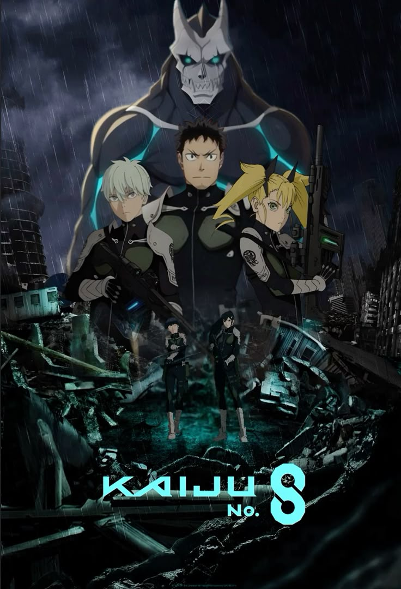في عالم بيعيش تحت تهديد مستمر من مخلوقات ضخمة اسمها الكايوجو، بيحلم كافكا هيبونو إنه ينضم لقوات الدفاع علشان يحاربهم ويحمي البشر. لكن بعد ما تعدى الثلاثين ولسه شغله في تنظيف بقايا الكايوجو بعد المعارك، حلمه بقى شبه مستحيل.
كل ده بيتغير لما يحصل حادث غريب يخليه يتحول بنفسه إلى كايوجو! قوة خارقة جديدة بتجري في عروقه، بين قلب إنسان وعقل وحش، وبيبدأ صراع رهيب بين رغبته في حماية الناس وهويته الجديدة اللي الكل عايز يقتلها.
الأنمي بيقدم مزيج مثالي بين الأكشن، الكوميديا، والمشاعر الإنسانية. Kaiju No. 8 مش بس قصة عن محاربة الوحوش، لكنه كمان عن الإصرار، الأمل، وتحدي الزمن لتحقيق الحلم اللي الناس شايفاه فات أوانه.
أسلوب الرسم والتحريك في الأنمي خرافي، والمعارك مليانة طاقة وتفاصيل بتخليك تحس إنك جوّا الميدان فعلاً. ومع شخصية كافكا الكاريزمية، القصة بتدي طابع فريد يخلي الأنمي من أقوى الإنتاجات الحديثة.
اضغط هنا للمشاهدهملخص أنمي Hunter x Hunter

في عالم مليان بالغموض والمخاطر، بيقرر فتى صغير اسمه غون فريكس يخرج في رحلة أسطورية علشان يبقى هانتر – مغامر نادر بيستكشف الأماكن الخطيرة وبيطارد الكنوز والمجرمين والمخلوقات الغريبة.
هدف غون مش مجرد الشهرة أو القوة... هو عايز يلاقي والده غين فريكس، واحد من أعظم الهانترز في التاريخ، واللي اختفى من حياته وهو صغير.
خلال الرحلة بيقابل أصدقاء بيغيروا مجرى حياته: كيلوا القاتل الموهوب اللي بيبحث عن الحرية، كورابيكا اللي بيسعى للانتقام لقبيلته، وليوريو الطبيب الطموح اللي قلبه كبير.
Hunter x Hunter مش بس مغامرة... ده درس في الصداقة، الطموح، الأخلاق، والظلام اللي جوا النفس البشرية. الأنمي بيجمع بين الذكاء في الكتابة، والدراما، والأكشن بمعنى الكلمة.
تحفة فنية من عالم الأنمي، بتثبت إن المغامرة الحقيقية مش في الوصول، لكن في الرحلة نفسها.
اضغط هنا للمشاهدهملخص أنمي Dr. Stone

بعد كارثة غامضة حوّلت كل البشر إلى حجارة، بتمر آلاف السنين ويستيقظ العبقري سينكو إيشيغامي في عالم فقد كل مظاهر الحضارة… عالم عاد إلى العصر الحجري.
بعقله العلمي الفذ، بيقرر سينكو يبدأ من الصفر ويعيد بناء البشرية بالعلم، حجر وراء حجر، معادلة وراء معادلة، مؤمن إن العقل هو أقوى سلاح في الوجود.
أنمي Dr. Stone بيمزج بين الحماس والمعرفة، بيخليك تتفرج وتتعلم في نفس الوقت — من صناعة الكهرباء للدواء وحتى الصاروخ.
رحلة ملحمية بتثبت إن العلم مش بس أداة للبقاء، لكنه أمل البشرية في النهوض من جديد.
اضغط هنا للمشاهدهملخص أنمي Monster
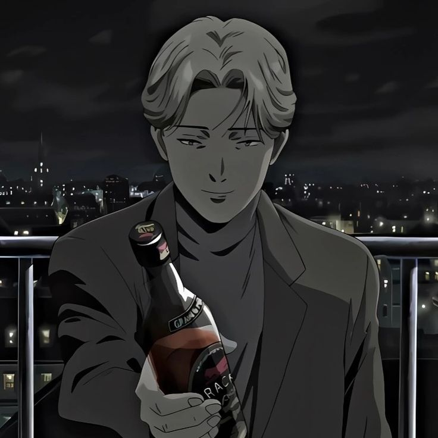في ألمانيا بعد الحرب الباردة، بيعيش الدكتور كينزو تينما، جرّاح عبقري الكل بيحترمه، لكنه بيتورط في قرار واحد بيغيّر حياته للأبد: لما قرر ينقذ حياة طفل صغير بدل عمدة المدينة… الطفل ده كان يوهان ليبرت، واللي هيكبر ويبقى وحشًا حقيقيًا في صورة إنسان.
من هنا بتبدأ رحلة تينما لمطاردة خطئه القديم، في قصة نفسية مرعبة بتكشف أعمق جوانب الشر في النفس البشرية.
أنمي Monster مش مجرد مطاردة بين طبيب وقاتل، لكنه تحقيق فلسفي في معنى الإنسانية، الذنب، والاختيار. كل حلقة بتسحبك أكتر جوّا عقل يوهان، الوحش اللي بيبتسم وهو بيهدم العالم بصمت.
تحفة درامية مظلمة بتخليك تسأل نفسك في النهاية: هو الوحش الحقيقي مين؟ يوهان... ولا الإنسان نفسه؟
اضغط هنا للمشاهدهAkame ga Kill!
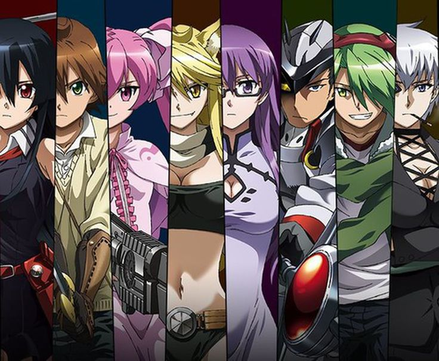في عالم تحكمه الإمبراطورية الفاسدة، يسافر الفتى تاتسومي إلى العاصمة على أمل إنقاذ قريته الفقيرة. لكن سرعان ما يكتشف الوجه المظلم للعاصمة، حيث الفساد والظلم يسيطران على كل شيء. بعد مأساة فقدانه لأصدقائه، ينضم تاتسومي إلى منظمة سرّية تُدعى Night Raid — مجموعة من القتلة الثوريين يسعون للإطاحة بالإمبراطورية الفاسدة. الأنمي بيجمع بين الدراما، الأكشن، والمأساة، وبيتناول فكرة إن العدالة مش دايمًا واضحة… كل شخصية عندها ماضيها، دوافعها، وألمها الخاص.
اضغط هنا للمشاهدهDeath-note ⚡

في عالمٍ يغمره الفساد والملل، يعثر الطالب العبقري لايت ياجامي على مذكرة غامضة تُدعى Death Note — تمتلك قوة خارقة: أي شخص يُكتب اسمه فيها، يموت.
يتحول الفضول إلى هوس، والعدالة إلى لعنة، عندما يقرر لايت أن يصنع عالماً جديداً خالياً من الجريمة، لكن خصمه الغامض L يظهر ليواجهه بعقلٍ يوازي ذكاءه.
العدالة... ليست دائماً بيضاء، ولا الشرّ دائماً أسود.
مذكرة الموت
ليست مجرد أنمي، بل رحلة في أعماق النفس البشرية، حيث يتصارع الضوء والظلام داخل عقلٍ واحد.
اضغط هنا للمشاهده